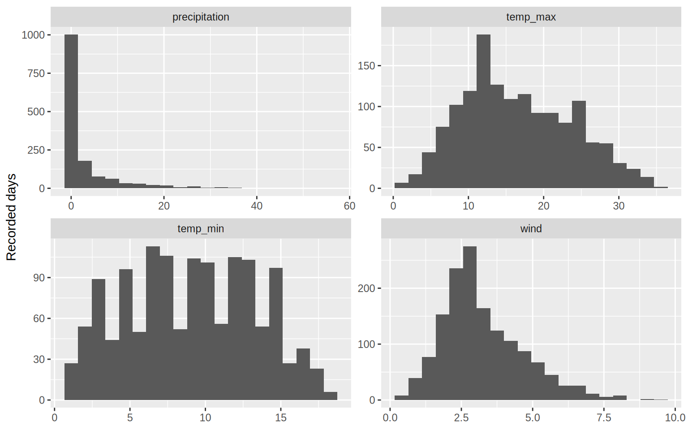
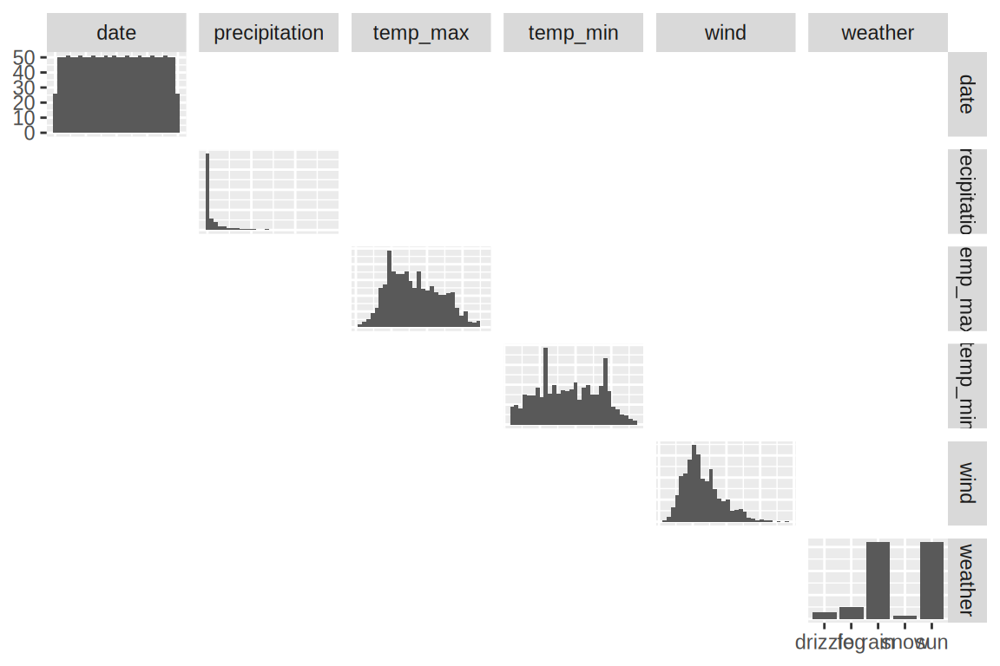
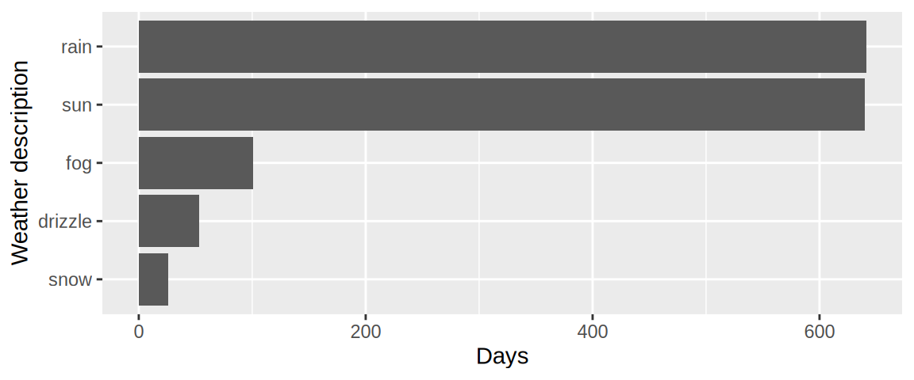
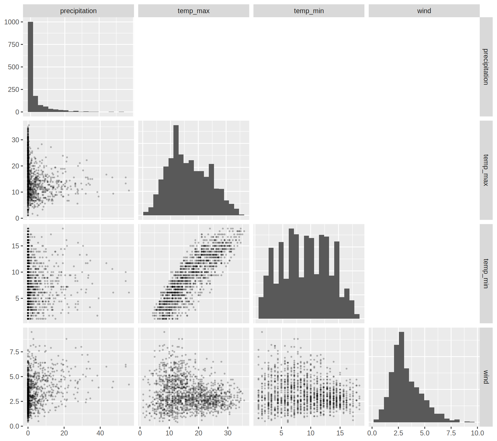
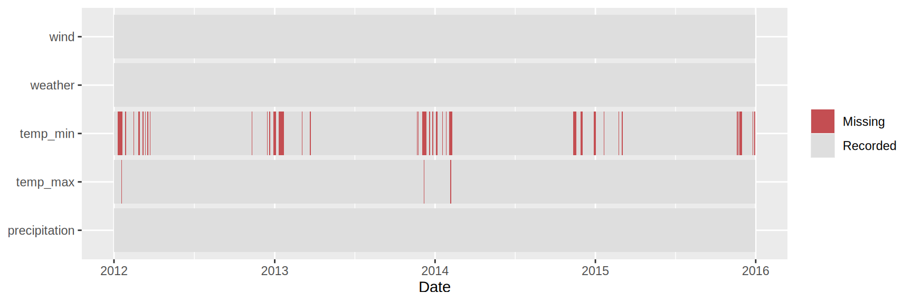
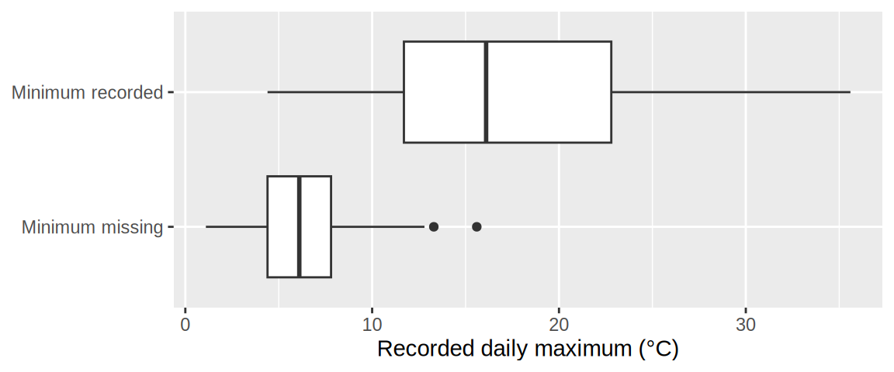
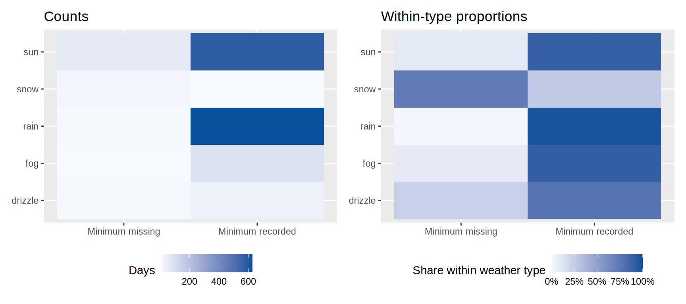

15 Exploratory data analysis
15.1 Why bother?
In this chapter, several techniques from the book are combined to explore a dataset. When we receive a new dataset, we might start with a rather broad question of interest that gets more narrow as we learn which comparisons in the data reveal interesting features of the data. We also don’t know whether the data mean what we think they mean.
Early investigation of data is often called exploratory data analysis, or EDA: using inspection, visualization, and transformation to understand data and develop questions and explanations worth investigating. EDA usually involves being both curious and suspicious about the data, and a useful EDA cycle could look something like this:
Form an expectation → inspect the data → notice agreement or surprise → choose an informative next check.
An expectation could come from a known data-collection procedure, general knowledge about data, or ordinary knowledge of the subject. When something looks strange, either the data or our understanding of it could be wrong and we need to find out more. Let’s see an example in the following exercise.
15.2 Understand what the data represent
Our example contains daily Seattle weather data over a few years. When starting EDA, it is a good idea to first take a closer look at the data values and think about what each column and each row represents.
weather = pd.read_csv('data/seattle-weather-sensor.csv', parse_dates=['date'])
show_df(weather)| date | precipitation | temp_max | temp_min | wind | weather | |
|---|---|---|---|---|---|---|
| datetime64[us] | float64 | float64 | float64 | float64 | str | |
| 0 | 2012-01-01 | 0.0 | 12.8 | 5.0 | 4.7 | drizzle |
| 1 | 2012-01-02 | 10.9 | 10.6 | 2.8 | 4.5 | rain |
| 2 | 2012-01-03 | 0.8 | 11.7 | 7.2 | 2.3 | rain |
| ... | ... | ... | ... | ... | ... | ... |
| 1458 | 2015-12-29 | 0.0 | 7.2 | NaN | 2.6 | fog |
| 1459 | 2015-12-30 | 0.0 | 5.6 | NaN | 3.4 | sun |
| 1460 | 2015-12-31 | 0.0 | 5.6 | NaN | 3.5 | sun |
1461 rows × 6 columns
weather <- read_csv('data/seattle-weather-sensor.csv', show_col_types = FALSE)
show_df(weather)| date | precipitation | temp_max | temp_min | wind | weather | |
|---|---|---|---|---|---|---|
| date | dbl | dbl | dbl | dbl | chr | |
| 0 | 2012-01-01 | 0.0 | 12.8 | 5.0 | 4.7 | drizzle |
| 1 | 2012-01-02 | 10.9 | 10.6 | 2.8 | 4.5 | rain |
| 2 | 2012-01-03 | 0.8 | 11.7 | 7.2 | 2.3 | rain |
| ... | ... | ... | ... | ... | ... | ... |
| 1458 | 2015-12-29 | 0.0 | 7.2 | NaN | 2.6 | fog |
| 1459 | 2015-12-30 | 0.0 | 5.6 | NaN | 3.4 | sun |
| 1460 | 2015-12-31 | 0.0 | 5.6 | NaN | 3.5 | sun |
1461 rows × 6 columns
An initial check we might want to do on this data is to see if there are any missing values and what data types are stored in the columns.
weather.info()<class 'pandas.DataFrame'>
RangeIndex: 1461 entries, 0 to 1460
Data columns (total 6 columns):
# Column Non-Null Count Dtype
--- ------ -------------- -----
0 date 1461 non-null datetime64[us]
1 precipitation 1461 non-null float64
2 temp_max 1456 non-null float64
3 temp_min 1345 non-null float64
4 wind 1461 non-null float64
5 weather 1461 non-null str
dtypes: datetime64[us](1), float64(4), str(1)
memory usage: 73.8 KBweather.describe() date precipitation ... temp_min wind
count 1461 1461.000000 ... 1345.000000 1461.000000
mean 2013-12-31 00:00:00 3.029432 ... 9.054498 3.241136
min 2012-01-01 00:00:00 0.000000 ... 1.100000 0.400000
25% 2012-12-31 00:00:00 0.000000 ... 5.600000 2.200000
50% 2013-12-31 00:00:00 0.000000 ... 8.900000 3.000000
75% 2014-12-31 00:00:00 2.800000 ... 12.800000 4.000000
max 2015-12-31 00:00:00 55.900000 ... 18.300000 9.500000
std NaN 6.680194 ... 4.319124 1.437825
[8 rows x 5 columns]weather |> summary() date precipitation temp_max temp_min
Min. :2012-01-01 Min. : 0.000 Min. : 1.10 Min. : 1.100
1st Qu.:2012-12-31 1st Qu.: 0.000 1st Qu.:10.97 1st Qu.: 5.600
Median :2013-12-31 Median : 0.000 Median :15.60 Median : 8.900
Mean :2013-12-31 Mean : 3.029 Mean :16.50 Mean : 9.054
3rd Qu.:2014-12-31 3rd Qu.: 2.800 3rd Qu.:22.20 3rd Qu.:12.800
Max. :2015-12-31 Max. :55.900 Max. :35.60 Max. :18.300
NAs :5 NAs :116
wind weather
Min. :0.400 Length :1461
1st Qu.:2.200 N.unique : 5
Median :3.000 N.blank : 0
Mean :3.241 Min.nchar: 3
3rd Qu.:4.000 Max.nchar: 7
Max. :9.500
We can see that there are some missing values in both the temp_min and temp_max columns, which we will explore more in detail later. Another example specific to this dataset is that we might want to check that there is exactly one recorded values per day and no duplicates or missing dates.
weather['date'].value_counts()date
2012-01-01 1
2012-01-02 1
2012-01-03 1
2012-01-04 1
2012-01-05 1
..
2015-12-27 1
2015-12-28 1
2015-12-29 1
2015-12-30 1
2015-12-31 1
Name: count, Length: 1461, dtype: int64weather |> count(date)# A tibble: 1,461 × 2
date n
<date> <int>
1 2012-01-01 1
2 2012-01-02 1
3 2012-01-03 1
4 2012-01-04 1
5 2012-01-05 1
6 2012-01-06 1
7 2012-01-07 1
8 2012-01-08 1
9 2012-01-09 1
10 2012-01-10 1
# ℹ 1,451 more rowsAll dates are present exactly once. That rules out one potential problem with duplication, but it does not tell us whether every measurement on those dates is present. It also doesn’t tell us whether every data is present unless we manually go through those dates one by one. For that we would have needed to construct the periodic range between the start and end date and then compare that to the dates available, which we will not do here.
NoteAsk what a count counts
If a movie belongs to both Comedy and Animation, expanding its genre list creates two rows for one film. Those rows can be useful for counting genre memberships, but treating them as two independent films changes the interpretation. Likewise, in a dataset of people repeated measurements from one person should not be counted as additional people. Count rows and the relevant observational units when the distinction matters.
15.3 Show an overview of the data
An overview is not just a quick route to a final chart. It gives us a chance to notice unexpected features across the dataset. We will inspect three complementary aspects:
- The distribution of each variable.
- Relationships between variables.
- Where measurements are missing.
When doing EDA, we can automate some of the chart construction, but we still need to decide what the columns mean and how to interpret each chart we make. For example, a numerical storage type does not automatically guarantee that the column is worth putting in a histogram or correlation matrix, as it could e.g. contain IDs or phone numbers.
A grid of distributions
In Binned distributions and Smoothed distributions, we examined one or a few distributions at a time. When we are doing EDA, we often want to explore multiple variables and tend to create many distributions charts at once to inspect several measurement columns together. We can create these grids using any of the distribution plots we have learned about so far; here we demonstrate it using histograms.
repeat applies one chart specification to several columns. alt.repeat() indicates where each column should be substituted. This differs from faceting: each panel below shows a different variable, rather than multiple groups of observations for a single variable. Since we have multiple different variables with different scales, it is not possible to set a single value of step to set a suitable bin width for all the variables. Instead, we use maxbins to control the number of bins in the charts, and let Altair figure out what the bin width needs to be.
measurements = ['precipitation', 'temp_max', 'temp_min', 'wind']
alt.Chart(weather, height=200).mark_bar().encode(
x=alt.X(alt.repeat()).bin(maxbins=20),
y=alt.Y('count()'),
).repeat(measurements, columns=2)Since the construction of the plot grids in EDA tends to demand more complex syntax, we often use helper packages that allows us to focus on exploring the data rather than getting to bogged down with writing code. A related helper package for Altair is Altair Ally, and we could use it to visualize the distributions in the following way:
import altair_ally as aly
aly.dist(weather, bin=True)The default is to show densities for each variables, which would be perfectly reasonable. Here we also demonstrate how to use bin=True to show histograms instead.
We can reuse the faceting grammar by putting the selected measurements in a long table with a column identifying the variable. The panels use independent scales so that each distribution’s shape is readable, despite differences in measurement units, ranges, and bin counts. Since we have multiple different variables with different scales, it is not possible to set a single value of binwidth to set a suitable bin width for all the variables. Instead, we use bins to control the number of bins in the charts, and let ggplot figure out what the bin width needs to be.
measurements <- c('precipitation', 'temp_max', 'temp_min', 'wind')
weather_long <- weather |>
pivot_longer(all_of(measurements), names_to = 'variable', values_to = 'value')
ggplot(weather_long, aes(x = value)) +
geom_histogram(bins = 20) +
facet_wrap(~variable, scales = 'free', ncol = 2)Warning: Removed 121 rows containing non-finite outside the scale range
(`stat_bin()`).
Since the construction of the plot grids in EDA tends to demand more complex syntax, we often use helper packages that allows us to focus on exploring the data rather than getting to bogged down with writing code. A related helper package for ggplot is GGally and we could use it to visualize the distributions of each variable. By default, it also shows a lot of other information than just the histograms, which we turn off here, but will talk more about later.
library(GGally)
ggpairs(
weather,
diag = list(continuous = "barDiag"),
upper = "blank",
lower = "blank"
)Warning: Removed 5 rows containing non-finite outside the scale range
(`stat_bin()`).Warning: Removed 116 rows containing non-finite outside the scale range
(`stat_bin()`).
The default is to show densities for each variables, which would be perfectly reasonable. Here we also demonstrate how to use diag = list(continuous = "barDiag") to show histograms instead.
This grid of distribution plots bin settings provide a first look of our variables. We should still apply the best practices of each individual visualization, such as testing various bind widths and inspecting individual observations.
From the chart above, we can note that precipitation has many zero values and a long right tail. Here, zero precipitation is a plausible measurement: a dry day. That is different from a missing measurement of precipitation. The temperature distributions have a lower boundary worth investigating, especially given the suspicious minima in our opening chart.
Just as we explored the distribution of our numerical variables above, we can explore the distribution of categorical variables as part of our overview visualization. We can think of the categorical distribution as simply the count of values for each categorical grouop. In this case, it could e.g. be interesting how many observations there are for each weather type.
alt.Chart(weather).mark_bar().encode(
x=alt.X('count()'),
y=alt.Y('weather').sort('-x'),
)weather |>
add_count(weather) |>
ggplot(aes(y = reorder(weather, n))) +
geom_bar()
In this chart we can see that there are some records described as snow days. How can there be snowy days if there were no negative temperatures in the data? This lends support to that there is something suspicious going on with this data that we should explore further.
An overview of bivariate relationships
In addition to viewing the univariate distributions above, we might also be interesting in the bivariate or joint distributions. Creating a grid of usch distributions is often referred to as a a scatterplot matrix or a pairs plot and lets us scan multiple relationships effectively. Usually, we are on the lookout for clusters, straight and curved relationships, and changes in spread.
We can use the repeat-syntax to create a scatterplot matrix; each row selects a y variable and each column selects an x variable.
alt.Chart(weather).mark_point(size=9, opacity=0.2).encode(
x=alt.X(alt.repeat('column'), type='quantitative'),
y=alt.Y(alt.repeat('row'), type='quantitative'),
).properties(width=110, height=110).repeat(
column=measurements,
row=measurements,
)As you can see the diagonal compares each variable with itself, why we see a straight line for all those relationships, and it redundant to include. Likewise, the lower and upper diagonal are mirrors of each other and we really only need to include one of them. It would be a tedious manual process to modify this, so instead we can use a Altair ally, which also let’s us easily bin the points to avoid saturation.
aly.pair(weather, mark='rect')It would be tedious and laborious to try to create a scatterplot matrix directly in ggplot. Instead, GGally supplies a convenient pairs-plot constructor that we will use. Here we request points for the lower triangle and histograms on the diagonal. We include the densities on the diagonal, but we could have excluded them if we wanted to just show the bivariate relationships. GGally also let’s us easily use a 2D density instead of plotting the points directly to avoid saturation.
GGally::ggpairs(
weather,
columns = measurements,
upper = 'blank',
lower = list(continuous = "density")
)Warning: Removed 5 rows containing non-finite outside the scale range
(`stat_density2d()`).Warning: Removed 5 rows containing non-finite outside the scale range
(`stat_density()`).Warning: Removed 116 rows containing non-finite outside the scale range
(`stat_density2d()`).
Removed 116 rows containing non-finite outside the scale range
(`stat_density2d()`).Warning: Removed 116 rows containing non-finite outside the scale range
(`stat_density()`).Warning: Removed 5 rows containing non-finite outside the scale range
(`stat_density2d()`).Warning: Removed 116 rows containing non-finite outside the scale range
(`stat_density2d()`).
From the chart, we can see a positive association between minimum and maximum temperature, which is rather unsurprising, since these likely vary together depending on whether a single day is warm or cold.
15.4 Missing values are part of the data story
We have seen a pattern that might involve missing measurements. Even without that clue, missingness should be part of our initial inspection. There are two separate questions:
weather.info()<class 'pandas.DataFrame'>
RangeIndex: 1461 entries, 0 to 1460
Data columns (total 6 columns):
# Column Non-Null Count Dtype
--- ------ -------------- -----
0 date 1461 non-null datetime64[us]
1 precipitation 1461 non-null float64
2 temp_max 1456 non-null float64
3 temp_min 1345 non-null float64
4 wind 1461 non-null float64
5 weather 1461 non-null str
dtypes: datetime64[us](1), float64(4), str(1)
memory usage: 73.8 KBweather |> summary() date precipitation temp_max temp_min
Min. :2012-01-01 Min. : 0.000 Min. : 1.10 Min. : 1.100
1st Qu.:2012-12-31 1st Qu.: 0.000 1st Qu.:10.97 1st Qu.: 5.600
Median :2013-12-31 Median : 0.000 Median :15.60 Median : 8.900
Mean :2013-12-31 Mean : 3.029 Mean :16.50 Mean : 9.054
3rd Qu.:2014-12-31 3rd Qu.: 2.800 3rd Qu.:22.20 3rd Qu.:12.800
Max. :2015-12-31 Max. :55.900 Max. :35.60 Max. :18.300
NAs :5 NAs :116
wind weather
Min. :0.400 Length :1461
1st Qu.:2.200 N.unique : 5
Median :3.000 N.blank : 0
Mean :3.241 Min.nchar: 3
3rd Qu.:4.000 Max.nchar: 7
Max. :9.500
There are 116 missing minimum temperatures and five missing maximum temperatures. The meaning of a missing value also requires context. It might represent a failed measurement, a survey question that was never asked, a refusal to answer, or a field that does not apply to that observation. A missing value can also be introduced by an unsuccessful join between tables, so the issue could like in the data processing rather than the data collection step. All these situations can all end up encoded as NA, but they require different interpreatations and actions. Conversely, an unknown value might be encoded as a number such as 999 and therefore escape a simple missing-value count (this is not good practice but can still happen).
Make the missingness pattern visible
We can create a table of indicators describing whether each cell is missing, then visualize those indicators with the same heatmap grammar used for other data. Here the horizontal axis represents actual dates, not an arbitrary row order.
missing_cells = (
weather.set_index('date').isna().reset_index()
.melt(id_vars='date', var_name='variable', value_name='is_missing')
.assign(
end_date=lambda d: d['date'] + pd.Timedelta(days=1),
status=lambda d: d['is_missing'].map({True: 'Missing', False: 'Recorded'}),
)
)
alt.Chart(missing_cells, width=560, height=130).mark_rect().encode(
x=alt.X('date:T', title='Date').axis(format='%Y', tickCount='year'),
x2='end_date:T',
y=alt.Y('variable:N', title=None),
color=alt.Color('status:N', title=None).scale(
domain=['Recorded', 'Missing'], range=['#dedede', '#c44e52']
).legend(orient='bottom'),
tooltip=['date:T', 'variable:N', 'status:N'],
)missing_cells <- weather |>
mutate(across(-date, is.na)) |>
pivot_longer(-date, names_to = 'variable', values_to = 'is_missing') |>
mutate(status = if_else(is_missing, 'Missing', 'Recorded'))
ggplot(missing_cells, aes(x = date, y = variable, fill = status)) +
geom_tile(width = 1, height = 0.9) +
scale_fill_manual(values = c(Recorded = '#dedede', Missing = '#c44e52')) +
scale_x_date(date_breaks = '1 year', date_labels = '%Y') +
labs(x = 'Date', y = NULL, fill = NULL)
The missing temperatures seems to occur in colder parts of the year. This supports further investigation as we don’t yet know the mechanism. A device problem, a reporting procedure, and a processing rule could all produce seasonally patterned missingness.
Follow the clue with a focused comparison
We create a new categorical variable that records whether the minimum is missing. That lets us compare the distributions of maximum temperature between the two groups. The five rows without a maximum temperature cannot contribute to this comparison; they remain accounted for in our missingness summary.
weather_status = weather.assign(
minimum_status=weather['temp_min'].isna().map(
{True: 'Minimum missing', False: 'Minimum recorded'}
)
)
alt.Chart(weather_status.dropna(subset=['temp_max']), height=100).mark_boxplot().encode(
x=alt.X('temp_max:Q', title='Recorded daily maximum (°C)').scale(zero=False),
y=alt.Y('minimum_status:N', title=None),
)weather_status <- weather |>
mutate(minimum_status = if_else(
is.na(temp_min), 'Minimum missing', 'Minimum recorded'
))
weather_status |>
drop_na(temp_max) |>
ggplot(aes(x = temp_max, y = minimum_status)) +
geom_boxplot() +
labs(x = 'Recorded daily maximum (°C)', y = NULL)
The recorded maxima are generally lower when the minima are missing. So maybe something is going wrong with the sensor on cold days?
Inspect combinations of categories
The weather description gives us another way to investigate missing minima. We can count the combinations of weather type and recording status, then compare the counts with proportions within each weather type. These answer different questions, as we saw in Counts & proportions.
status_counts = (
weather_status.groupby(['weather', 'minimum_status']).size()
.reset_index(name='days')
)
status_counts['proportion'] = (
status_counts['days'] / status_counts.groupby('weather')['days'].transform('sum')
)
tiles = alt.Chart(status_counts, width=210, height=150).mark_rect().encode(
x=alt.X('minimum_status:N', title=None).axis(labelAngle=0),
y=alt.Y('weather:N', title=None),
tooltip=['weather:N', 'minimum_status:N', 'days:Q',
alt.Tooltip('proportion:Q', format='.1%')],
)
counts = tiles.encode(
color=alt.Color('days:Q', title='Days').scale(scheme='blues').legend(orient='bottom')
).properties(title='Counts')
proportions = tiles.encode(
color=alt.Color('proportion:Q', title='Share within weather type')
.scale(domain=[0, 1], scheme='blues').legend(format='%', orient='bottom')
).properties(title='Within-type proportions')
alt.hconcat(counts, proportions).resolve_scale(color='independent')status_counts <- weather_status |>
count(weather, minimum_status, name = 'days') |>
group_by(weather) |>
mutate(proportion = days / sum(days)) |>
ungroup()
tiles <- ggplot(status_counts, aes(x = minimum_status, y = weather)) +
geom_tile() +
labs(x = NULL, y = NULL) +
theme(legend.position = 'bottom')
counts <- tiles +
aes(fill = days) +
scale_fill_gradient(low = '#f7fbff', high = '#08519c') +
labs(title = 'Counts', fill = 'Days')
proportions <- tiles +
aes(fill = proportion) +
scale_fill_gradient(low = '#f7fbff', high = '#08519c',
limits = c(0, 1), labels = scales::label_percent()) +
labs(title = 'Within-type proportions', fill = 'Share within weather type')
patchwork::wrap_plots(counts, proportions, nrow = 1)
WarningAvoid drawing premature conclusions about the cause of the missingness
In real data, we would now consult the collection procedure, processing code, or people who produced the measurements. The pattern is consistent with preferential loss of cold measurements, but it does not prove a faulty sensor. Likewise, failing to see a pattern would not prove that missingness is harmless.
Formal distinctions such as missing completely at random, missing at random, and missing not at random describe assumptions about how missingness depends on observed and unobserved values. We generally cannot establish those assumptions from a missingness plot alone.
Reveal the teaching modification
For this example, we know the mechanism because we created it: both minimum and maximum temperatures at or below 0.6°C were replaced with missing values. This simulates a reporting failure that removes low measurements, e.g. due to a faulty sensor that can’t record low temperatures.
Even though only about 8% of minimum temperatures were removed, they came from one part of the distribution. Whether missingness matters depends on which values are missing and which question we are asking, not just on the overall percentage. Replacing the missing temperatures with zero would also be misleading: zero Celsius is a particular temperature, not a way to represent missingness. Handling missing data requires a justified decision for the analysis at hand; this example does not establish a universally correct replacement rule.
15.5 Turn patterns into questions
The weather mystery is one example of a broader strategy: . Generating another plot is useful when you can explain what it will help you learn. Here is an example of some common scenarios and what a helpful next step could be.
| Observation in an overview | Possible explanations | A useful next check |
|---|---|---|
| Two peaks | Subgroups, rounding, or display settings | Compare subgroups, inspect values, and vary bin width or bandwidth |
| An extreme value | A genuine unusual case, a unit mismatch, or an entry error | Inspect the record, related variables, and source documentation |
| A tall distribution for one group | More observations, not necessarily a different shape | Compare counts and within-group normalized distributions |
| A pooled association | Within-group relationships or differences between groups | Color or facet by a plausible grouping variable |
| More rows after a transformation | New observations or repeated memberships | Check distinct units as well as row counts |
There need not be a single correct follow-up. Its usefulness depends on which explanation you want to investigate. Sometimes the next step is to ask the data provider a question rather than draw a chart.
WarningAvoid “fixing” an anomaly without first investigating it
An unusual value can be an error, but it can also be the observation that teaches us something important. Use units, definitions, related measurements, and provenance to investigate. Record any exclusions and their reasons. Do not remove a value simply because the resulting chart looks cleaner or the association becomes stronger.
NoteWhen EDA precedes machine learning
An outcome-focused overview helps us understand a prospective target and candidate predictors, but it does not establish future predictive performance. Ask whether a feature would actually be available when a prediction is made. For example, using the measured precipitation for a day to predict whether that day had rain would reveal the answer rather than provide a useful forecast.
Once evaluation data have been held out, use the training data for exploratory choices that influence feature selection, transformations, or fitted preprocessing. For time-dependent prediction, also consider whether a chronological split is needed. Later modeling courses develop these evaluation decisions in more detail.
15.6 What have we learned, and what remains unresolved?
EDA does not have to end with a striking discovery. Finding a data limitation, ruling out an explanation, or recognizing that the available variables cannot answer the question can be a useful result.
For our weather investigation, a short record could be:
| Stage | What we learned |
|---|---|
| Initial observation | Every year’s lowest recorded minimum is 1.1°C. |
| Broad inspection | The lower temperature range is absent, although all dates are present. |
| Missingness overview | Missing temperature measurements are concentrated in colder months. |
| Focused comparison | Missing minima tend to occur on days with lower recorded maxima. |
| Mechanism check | The teaching preparation removed temperatures at or below 0.6°C. |
| Revised conclusion | The incomplete data cannot establish that freezing days were absent; their temperature summaries describe a selected subset of measurements. |
In a real investigation, the mechanism-check row might still say “unresolved”. That is more informative than quietly assuming a cause and proceeding.
You do not need to publish every chart made during exploration. Keep enough of the analysis history to explain important decisions, and communicate the evidence relevant to the final question. Useful stopping points include having enough evidence for the current decision, or discovering that the next step requires information outside the dataset.
For your next dataset, try leaving a short trail of reasoning:
What did I expect? What did I observe? What could explain it? What did I check next? What can I now conclude?
15.7 Further reading
- Wickham, Çetinkaya-Rundel, and Grolemund, R for Data Science, Chapter 10: Exploratory data analysis. A question-driven cycle of visualization, transformation, and follow-up, with R examples.
- Peng and Matsui, The Art of Data Science, Chapter 4, especially “Always be Checking Your n’s” and “Challenge Your Solution.”
- Wongsuphasawat, Liu, and Heer (2019), Goals, Process, and Challenges of Exploratory Data Analysis: An Interview Study. Describes how analysts combine data-quality assessment, discovery, and automated overviews.
- Emerson and colleagues, The Generalized Pairs Plot. Explains how a matrix of appropriate displays can reveal relationships among mixed variable types.
- Waskom, Visualizing distributions of data and Building structured multi-plot grids. Python examples connecting representation choices with exploratory tasks.